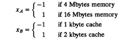

| Previous | Table of Contents | Next |
Twenty percent of the jobs account for 80% of the resource consumption.
—Pareto’s Law
A 2k experimental design is used to determine the effect of k factors, each of which have two alternatives or levels. This class of factorial design deserves special discussion because it is easy to analyze and helps in sorting out factors in the order of impact. At the beginning of a performance study, the number of factors and their levels is usually large. A full factorial design with such a large number of factors and levels may not be the best use of available effort. The first step should be to reduce the number of factors and to choose those factors that have significant impact on the performance.
Very often the effect of a factor is unidirectional, that is, the performance either continuously decreases or continuously increases as the factor is increased from minimum to maximum. For example, the performance is expected to improve as the memory size is increased or the number of disk drives is increased. In such cases we can begin by experimenting at the minimum and the maximum level of the factor. This will help us decide if the difference in performance is significant enough to justify detailed examination.
In order to explain the concepts of 2k designs, it is helpful to start with a simple case of just two factors (k = 2). This special case is presented in the next few sections. After developing this case, we generalize the concepts to a larger number of factors.
A 22 experimental design is a special case of a 2k factorial design with k = 2. In this case, there are two factors each at two levels. Such a design can be easily analyzed using a regression model as shown by the following example.
Example 17.1 Consider the problem of studying the impact of memory size and cache size on the performance of a workstation being designed. Two levels of each of these two factors are chosen for the initial simulation. The performance of the workstation in Million Instructions Per Second (MIPS) is listed in Table 17.1.
TABLE 17.1 Performance in MIPS
Cache Size
(kbytes)Memory Size
4 MbytesMemory Size
16 Mbytes
1 15 45 2 25 75
Let us define two variables xA and xB as follows:

The performance y in MIPS can now be regressed on xA and xB using a nonlinear regression model of the form
y = q0 + qAxA + qBxB + qABxAxB
Substituting the four observations in the model, we get the following four equations:
15 = q0 – qA – qB + qAB
45 = q0 + qA – qB – qAB
25 = q0 – qA + qB + qAB
75 = q0 + qA + qB + qAB
These four equations can be solved uniquely for the four unknowns. The regression equation is
y = 40 + 20xA + 10xB + 5xAxB
The result is interpreted as follows. The mean performance is 40 MIPS; the effect of memory is 20 MIPS; the effect of cache is 10 MIPS; and the interaction between memory and cache accounts for 5 MIPS.
| TABLE 17.2 Analysis of a 22 Design | |||
|---|---|---|---|
| Experiment | A | B | y |
| 1 | –1 | –1 | y1 |
| 2 | 1 | –1 | y2 |
| 3 | –1 | 1 | y3 |
| 4 | 1 | 1 | y4 |
In general, any 22 design can be analyzed using the method of Example 17.1. In the general case, suppose y1, y2, y3 and y4 represent the four observed responses. The correspondence between the factor levels and the responses is shown in Table 17.2. The model for a 22 design is
y = x0 + qAxA + qBxB + qABxAxB
| Previous | Table of Contents | Next |